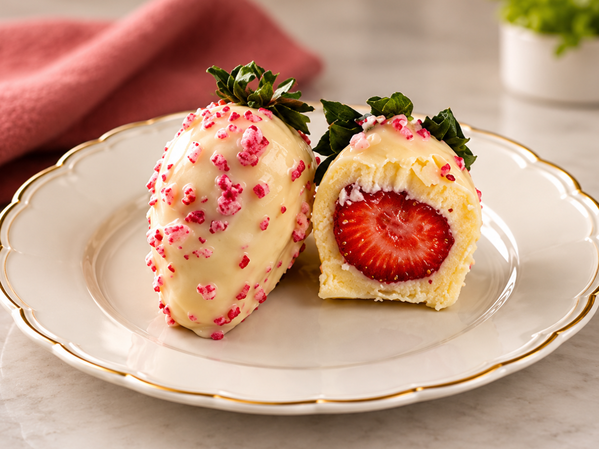

Morango Cravejado

Ingredientes para o brigadeiro branco:
- 1 Caixa de Leite Condensado
- 1/2 Caixa de Creme de Leite
- 6 Morangos
- 4 Colheres de Leite em Pó
- 1 Colher de Manteiga
Para o caramelo e montagem:
- 2 xícaras de chá de açúcar
- 1 xícara de chá de água
- 2 colheres de sopa de vinagre de maçã
- 400 g de chocolate branco
- Corante alimentício vermelho a gosto
Passo a Passo:
Lave os morangos e seque bem com papel-toalha. Em uma panela, coloque o leite condensado, o creme de leite, o leite em pó e a manteiga. Leve ao fogo baixo e mexa sem parar até desgrudar do fundo da panela e obter o ponto para enrolar. Transfira para um recipiente e aguarde esfriar. Cubra com plástico-filme e reserve. Em outra panela, coloque o açúcar, a água, o vinagre de maçã e o corante alimentício e misture até dissolver os grãos de açúcar. Leve ao fogo médio e cozinhe até começar a ferver e engrossar, sem mexer para não açucarar o caramelo. Desligue o fogo, transfira para um tapete de silicione e espalhe com uma espátula formando uma camada fina. Deixe descansar até resfriar e endurecer completamente. Espete os morangos em palitos de churrasco e reserve. Unte as mãos com manteiga, pegue pequenas porções do brigadeiro de leite em Pó e cubra as frutas completamente. Reserve. Dobre ao meio o tapete de silicone com o caramelo e pressione com as mãos para quebrá-lo em pedaços bem pequenos.Em um recipiente, coloque o chocolate branco e leve ao micro-ondas, de 30 em 30 segundos, até derreter. Adicione os pedaços de caramelo e misture. Banhe os morangos na cobertura e disponha-os sobre o papel-manteiga até secarem. Retire os palitos e cubra o espaço deixado por eles com as folhas dos morangos. Sirva em seguida.